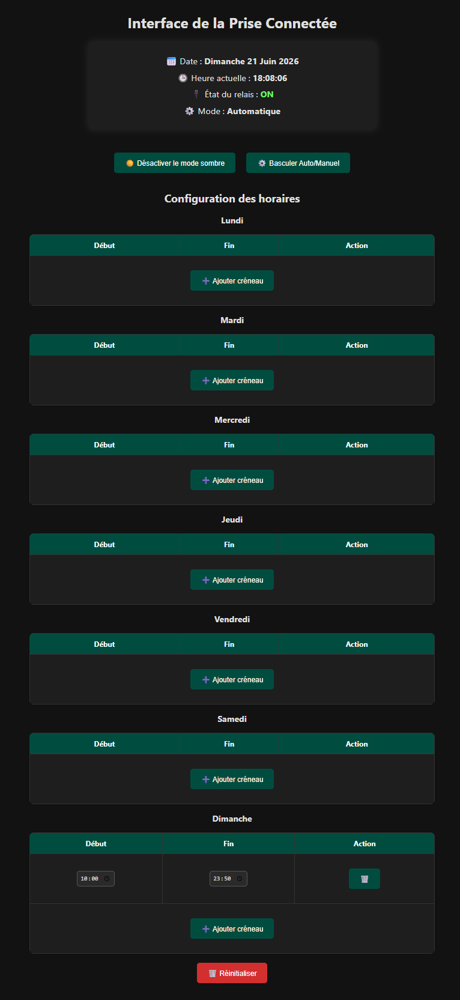
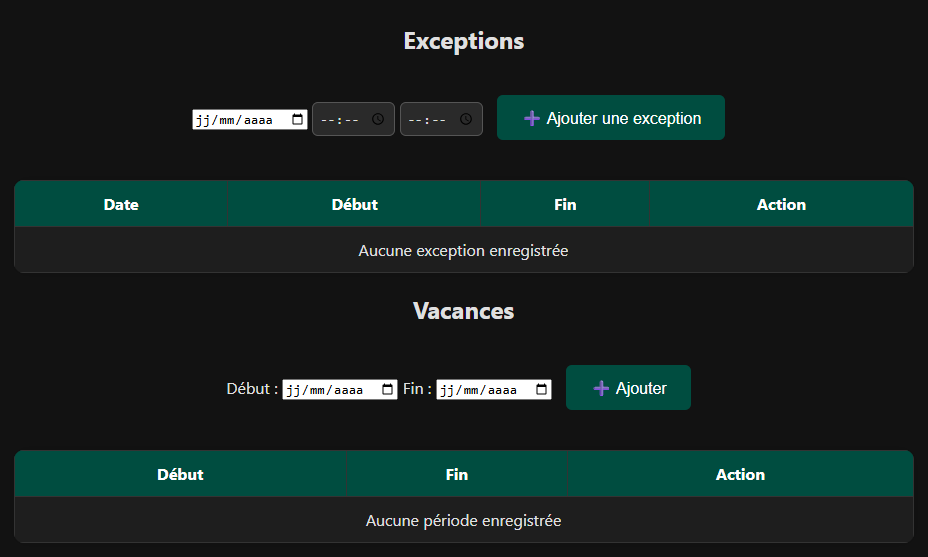
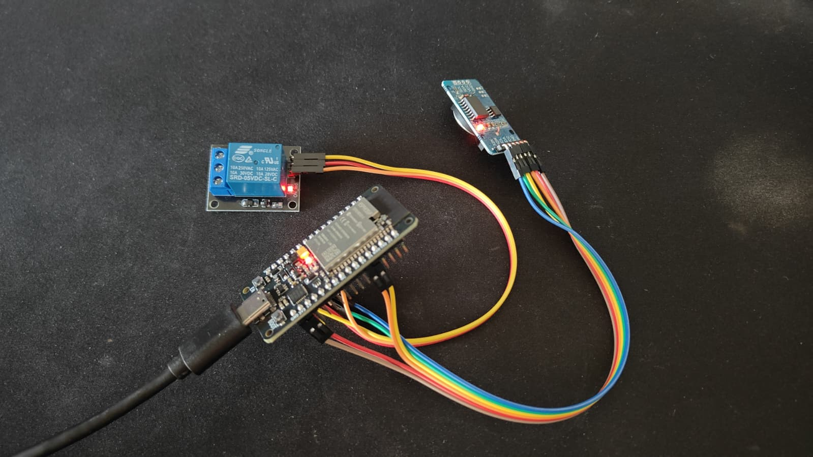

Prise connectee
← RetourDescription :
Réalisation d’une prise connectee avec un ESP32 et un relais. L'objectif est de pouvoir controler depuis une IHM les heures de fonctionnement de la prise électrique, afin de limiter la consommation lorsque cela n'est pas nécessaire.
Etapes :
- Codage des connexions WIFI de l’ESP32. Il fonctionne en STA (station). Le mode STA permet à l’ESP32 de se connecter à la box WIFI de l’opérateur internet afin de pouvoi accéder à l'IHM à distance.
- Codage du controle du relais par l'ESP32.
- Possibilité d'ajouter plusieurs plages horaires, des exceptions et des périodes de vacances (ces deux derniers surpassant les plages horaires).
- Codage de l'IHM et de l'OTA.
- Ajout d'un module RTC I2C DS3231 GT584 pour un fonctionnement sans serveur NTP. Le module RTC permet de garder l'heure même lorsque l'ESP32 est éteint.
- Cablage électrique pour intégrer le système sous forme de prises gigognes.
Environnement technique :
ArduinoIDE, ESP32, WIFI, électricité, C++ et IHM


